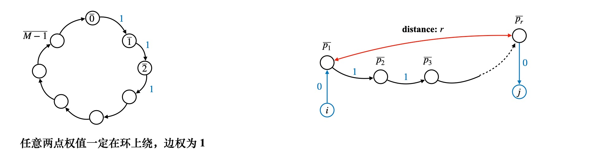

M-SOLUTIONS Programming Contest 2021
E
Rook Path
题目大意
给定一个 n×5 的棋盘，有一个车，每一次必须移动，能够移动到当前所在的行的同一行任意一个位置
或者是当前所在列同一列的任意一个位置，起始时候在 (x1,y1)，移动 k 步，问 k 步后在 (x2,y2)
有多少种可能性
不难想到是 dp，用移动的步数作为 dp 的阶段，不难列出状态转移方程如下
f(k,x,y) 表示当前第 k 步，位于 (x,y) 的方案数，则
f(k,x,y)=x′=x∑f(k−1,x′,y)+y′=y∑f(k−1,x,y′)
考虑优化，因为最后只与 x′=x?y′=y? 有关，可以考虑状态压缩
用 0 表示 x′=x，1 表示 x′=x，同样 0 表示 y′=y，1 表示 y′=y
这样不难列出如下状态转移方程
dp(k,0,0)=dp(k−1,1,0)+dp(k−1,0,1)
说明，此时 k−1→k 过程中只能有一种移动方式，即同行或同列移动
dp(k,1,0)=dp(k−1,0,0)⋅(n−1)+dp(k−1,1,0)⋅(n−2)+dp(k−1,1,1)
此时 k 阶段所在的列 y′ 是确定的，k−1→k 有两种情况，即在当前列移动，或者从其他列移动到当前列
从其他列移动到当前列，只有一种平移方式，即直接移动到 y′ 列，当前列移动呢？考虑 k−1 阶段能够选择的行有多少种？
dp(k,0,1)=dp(k−1,0,0)⋅(m−1)+dp(k−1,0,1)⋅(m−2)+dp(k−1,1,1)
和上一种情况完全对称
dp(k,1,1)=dp(k−1,1,0)⋅(m−1)+dp(k−1,0,1)⋅(n−1)+dp(k−1,1,1)⋅(n−2+m−2)
第 k−1 阶段可能和 k 阶段，同行不同列，从 (m−1) 列中任选一列作为状态，不同行同列，从 (n−1) 行任选作为状态
还有就是不同行，不同列，此时能选择行移动或者列移动，有 n−2+m−2 种选择
根据这 4 种情况 dp 即可，一开始时候 dp(0,0,0)=1，dp 的终点是什么呢？
考虑 x2=x1? 或者是 y2=y1? 判断终点状态是 (0,0),(0,1),(1,0),(1,1) 哪一种
比如 x 坐标对应的状态是 1，那么终点和起点行不同，x2 是这些不同状态中的任意一种，答案是 dp(1,⋯)/(n−1)
如果相同呢？那么行可以选择的情况只有 1 种，dp(0,⋯)/1，y 情况同理
用向量 vx={1,n−1},vy={1,m−1}，对于最后的状态 dp(i,j)
返回 dp(i,j)/vx(i)/vy(j) 即可，其中 i←(x2=?x1)
F
Simple Operations on Sequence
题目大意
给定大小为 n 的数组 A,B，一次操作可以有如下两种
任意选择 Ai，让其 +1 或者 −1，产生 X 代价，或者是任意交换 A 中的两个元素，产生 Y 代价
问需要最少的代价，使得 A,B 相等
算法分析
首先对于 n⩽18，不难想到是状态压缩，转移方程大致如下
假设当前处理第 i 个数，其中前面 i−1 个数都相等，即 j∈[0⋯i−1] 均有 Aj=Bj
此时加入 i，令 Ai=Bi，有状态转移
dp(s∣(1≪i))=min(dp(s)+cost(Ai=Bi))
难点在于 cost(Ai=Bi) 怎么计算
注意代价有两部分组成
- (A1,A2,⋯,An)→(Ap1,Ap2,⋯,Apn)，这里转换的代价，实际上是排列
P=(p1,p2,⋯pn) 逆序对的数目 inv(P)，这部分的代价为 inv(P)⋅Y
- 还有一部分代价就是 i=1∑n∣Api−Bi∣
算法设计
这里让 B 数组不动，改变 A 数组，用一个状态 s 来表示，其中 s 中为 1 的位 i 表示
B(i)=A(pi)，即已经确定了 Bi 这一位和 A 中对应的位 Api 相等
状态转移是 dp({00⋯0})→dp({11⋯1})
考虑某个状态 s，尝试加入不在 s 中的元素 x，dp(s)⟶dp(s∪{x})
- 首先计算 s 中有多少个 1，不妨设有 j 个 1，说明已经确定了 (B1,B2,⋯,Bj)
当前正在确定 Bj+1，将 x 加入 s 集合的代价是 ∣A(x)−B(j+1)∣⋅X
- 考虑加入 x 过程，A 的下标 {{p1,p2,⋯,pj},pj+1}←{{p1,p2,⋯,pj},x}
那么代价要加上 A(1,2,⋯j)→A(p1,p2,⋯pj)，实际上是计算 inv(P[1→j])
即前 j 个数逆序对的个数，实际上，因为 P 是一个排列，x∈{1⋯n}，需要看一下
s 中 下标 <x 的位，是不是都在 s 中
如果发现 s 中的 p 位为 0，并且 p<x，那么逆序对的个数就 +1，最后算出此时的逆序对 inv(s,x)
代价要加上 inv(s,x)⋅Y
- 状态转移方程如下，dp(s∪{x})⟵x∈/smin(dp(s)+inv(s,x)⋅Y+∣Ax−Bj+1∣⋅X)
其中，j 为 s 中 1 的个数，表示当前已经确定了 B[1⋯j] 中所有元素，正在安排 Bj+1
结论
如何计算一个排列 (1,2,⋯,i)→(p1,p2⋯,x) 的逆序对个数？
实际上遍历整个排列，如果比 x 小的数都在 x 前面，那么逆序对很显然是 0
逆序对的个数，实际上要统计 x 之前（如果用一个集合维护的话，就是统计集合中）
有多少个数 <x 并且不在集合中
G
Modulo Shortest Path
题目大意，给定 n 个点的完全图，给定 a[1⋯n],b[1⋯n]，任意 i,j,i=j
有 (i→j) 的有向边，权值为 (ai+bj)modM，问从 1→n 的最短路径
如果直接在原图上跑 dijkstra，因为图的规模是 O(n2)，必然会超时
注意到任意两点 i,j 的权值总是在 M 的剩余系中，考虑剩余系的值 {0,1,⋯,M−1}
这样实际上只需要考虑 M 个点即可

算法设计
可以考虑拆边，将长度为 M 的边，依次拆成 0→1→⋯→M−1→0 的环，两点间的长度分别为 1
(i,j)=(Ai+Bj)modM，应该对应一张图 G′，其中从 i 进入环上的某个点 p1
然后从 pr 处离开环，进入 j
(Ai+Bj)modM=r，可以推出 Bj≡(−Ai)+r (modM)
也就是说，如果令 p1=(−AimodM)，令边 (i,p1) 的权值为 0
又因为 Bj=(−Ai+r)，也就是说 Bj 是在环上距离 −Ai 恰为 r 的点
令 pr←(BjmodM)，并且令 (pr,j) 的权值为 0
原问题和图 G′ 恰好一一对应
再观察发现，我们根本用不到 M 个点，实际上，只有 −Ai(modM) 和 Bi(modM)
这些点是有意义的，离散化后将其放入集合 v 中，按剩余系的值排序，然后按从小到大的顺序依次连边
离散化之后对应的原来剩余系的值为 rm(vi)
新图中令 (vk,vk+1) 的权值为 (rm[vk+1]−rm[vk])
这样只有 O(2n) 个点，可以直接 dijkstra
另外注意图中剩余系是有环的，如果遍历到 vm 最后一个元素，（假设 v 中最后一个元素是 vm）
需要在 (vm,v0) 之间连边，权值为 (M+rm[v0]−rm[vm])modM
算法实现
- 建一张新图 G，用 get(x,type) 表示点 x 对应在新图中点的编号，其中 type=0 表示原图中的点
type=1 表示剩余系
- 对每一个 ai，在 i⟶(−aimodM) 建一条有向边，权值为 0
同理对每一个 bi 在 bimodM⟶i 建一条有向边，权值为 0
将 (−aimodM) 和 bimodM 加入集合 v 中并排序
然后对集合 v 中的元素按前面描述的方式，加入有向边
- 对新图从 get(1,0)→get(n,0) 跑 dijkstra 即可
 微信
微信 支付宝
支付宝